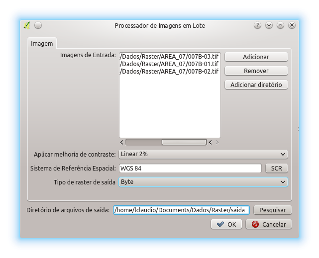

O Processador de Imagens em Lote permite que um conjunto de imagens selecionada pelo usuário seja processada automaticamente. Para tanto, o usuário pode adicionar imagens individualmente através do botão Adicionar. Também é possível selecionar pastas através do botão Adicionar diretório. Havendo necessidade imagens selecionadas podem ser removidas através do botão Remover

Após a seleção das imagens resta ao usuário selecionar a melhoria de contrate, caso necessário, o sistema de referência espacial através do botão SCR e o tipo de raster da saída. O tipo Byte se refere a imagens 8 bits.
Estando tudo selecionado é só clicar em Pesquisar para selecionar a pasta de saída e clicar em Ok.